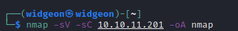
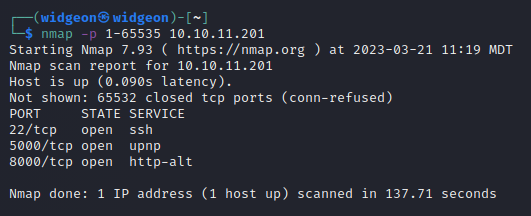
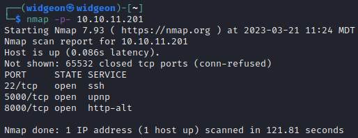
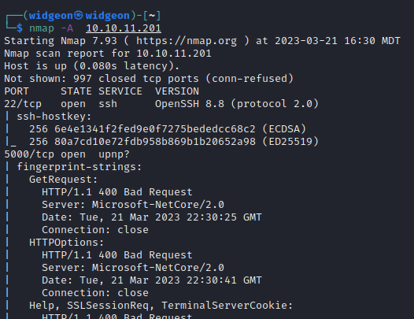

Nmap
The starting point of any CTF challenge
Basic Facts:
- Nmap is one of the oldest, most versatile and well respected security tools.
- It allows you to “port scan” a target, or a range of targets, to determine which ports are actively listening for a connection
- Ports are used to direct traffic to the right application server
- There are 65535 ports available on any network enabled computer while only 1024 are well known.
- Run Nmap with zero flags and use widgeon.py to do the rest
Common Ports Seen in CTF Challenges:
(Keep in mind that it is possible to change the port that the service is running on)
• Port 21: FTP (File Transfer Protocol)- This is used to transfer files from the target machine onto your machine. This will either require a username and password or you may be able to log in anonymously.
• Port 22: SSH (Secure Shell)- You will need to find a username and password to ssh into the target machine.
• Port 25: SMTP (Simple Mail Transfer Protocol)- This could indicate a mail server and with more scanning you may be able to get a domain name or other information out of it.
• Port 53: DNS (Domain Name System)- Scan it with Fierce to get more information.
• Port 80: HTTP (Hypertext Transfer Protocol)- This means there is a website associated with the IP.
• Port 139/445: SMB (Server Message Block)- This is similar to FTP but for Windows-based networks.
• Port 443: HTTPS (HTTP Secure)- This means the website is "secure". You will usually need valid credentials found elsewhere to run any exploits.
• Port 1433: MSSQL (Microsoft SQL Server)- Impacket offers a linux based way to connect to MSSQL databases.
• Port 3306: MySQL Database- Use SQLMap to try to enumerate the database(s).
• Port 3389: RDP (Remote Desktop Protocol)- This is used for remote access on Windows servers.
• Port 8080: Alternative HTTP Port
Favorite Nmap Scan
A very common nmap scan is "nmap -sV -sC <IP ADDRESS> -oA <File Name>
This is a combination of tags used to scan services, version numbers, default scripts which will then be saved into a file.
• -sV will scan for version and services
• -sC will scan with default scripts
• -oA will save the results into a file
Using Nmap:
- To use nmap all you have to do is open a terminal and type
- nmap <IP ADDRESS>
- nmap <website.com>
Using Nmap to scan a Target IP:
- To use nmap to scan a subnet type:
- nmap <website.com>/
- nmap <IP ADDRESS/>
This will scan a subnet. This means that it will scan 10.10.10.1 through 10.10.10.255.
You can go all the way to /32 which is a single IP or up to every address possible which is 0.0.0.0/0 (do not do this).
Using Nmap to scan Ports:
- To scan for a specific port use:
- nmap -p <PORT> <IP ADDRESS>
- To scan all ports and have nmap display all results regardless if the port is open, closed or filtered use:
- nmap -p 1-65535 <IP ADDRESS>
- nmap -p- <IP ADDRESS>
Both will return the same results. They will scan all TCP ports on the target and report which ports are open, closed, or filtered.
 Using Nmap to scan for Versions and Services:
- nmap -sV <IP ADDRESS>
Using Nmap to scan for Versions:
- To use nmap to scan for versions you can use:
- nmap -A <IP ADDRESS>
This is an aggressive scan that does version detection, script scanning and traceroute.
- To scan for all the versions of all services you can use:
- nmap --version-all <IP ADDRESS>